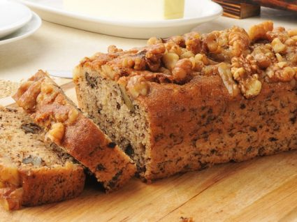

Queque de Nueces

Ingredientes
- 1 taza de mantequilla
- 1 taza de azúcar
- 2 huevos
- 3/4 taza de maicena
- 1 y 1/2 taza de harina
- 1 cucharadita de esencia de vainilla
- 1 y 1/2 taza de nueces picadas
- 1 cucharada de mantequilla
- 3 cucharaditas de polvo de hornear
Preparacion
Batir la mantequilla hasta que quede cremosa agregar las yemas una a una sin dejar de batir
aparte cernir la harina y el polvo de hornear y añadirlos a la preparación anterior uniendo lentamente todos los ingredientes
incorporar las claras batidas mezclando con movimientos envolventes
agregar las nueces picadas
perfumar con vainilla llevar a horno moderado por 30 minutos aprox.
Desmoldar y dejar enfriar.